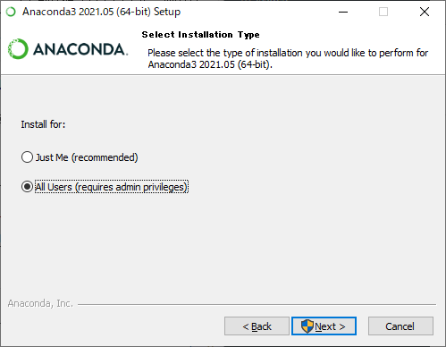
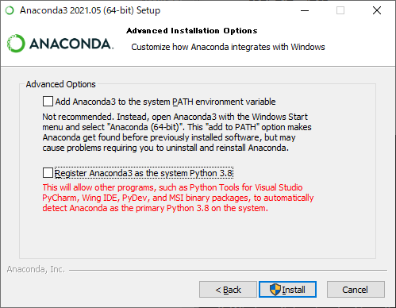
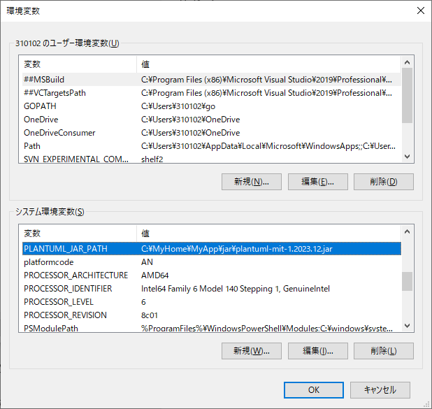
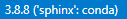
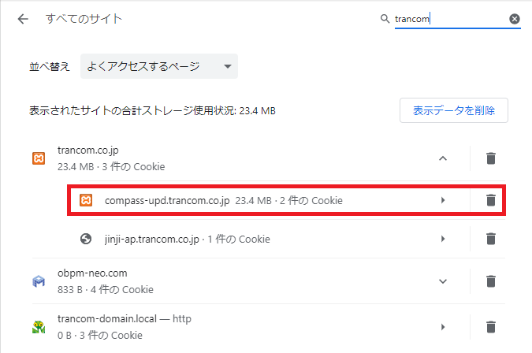
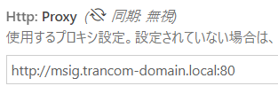

1. Sphinxの環境構築～サイト更新¶
以下の手順で自PCに環境構築し、マークアップ言語を利用してこのサイトをメンテナンスしてください。
1.1. 始めに¶
目次について s index.rstファイルとし、reStructuredTextを利用する。
PlantUML図
reStructuredTextで.. uml::の後にに、PlantUMLの文法を利用する。その他コンテンツについて
目次以外のコンテンツを作成する時のマークアップ言語はMarkdownを利用する。拡張子について
rst ：reStructuredText
md ：Markdown
1.2. 開発環境の構築¶
Anaconda3 をインストール
https://compass-upd.trancom.co.jp/gitbucket/its_ls/soft_library/tree/master/anaconda/anaconda3# このインストーラで動作確認しています。他のバージョンは未検証です。 Anaconda3-2021.05-Windows-x86_64.exeインストールフォルダについて
All Users(requires admin privileges)を選択してください。
「Advanced Installation Options」について
Register Anaconda3 as the system Python 3.8のチェックを外してください。
プロキシ設定
Anacondaの直下に「.condarc」ファイルを作成
proxy_servers: http: http://msig.trancom-domain.local:80 https: http://msig.trancom-domain.local:80
Anaconda Prompt(Anaconda3)を起動
「スタート」 - 「Anaconda3 (64bit)」 - 「Anaconda Prompt(Anaconda3)」を起動してください。
sphinx用の仮想環境を作成
rem Anaconda Promptで実行 conda create -n sphinx python=3.8.8仮想環境をsphinxに切り替えする
rem Anaconda Promptで実行 conda activate sphinx > (sphinx)C:\path\to
Markdown parser MyST-Parser をインストール
rem Anaconda Promptで実行 pip install myst-parser==0.15.1 rem プロキシ環境化 pip install myst-parser==0.15.1 --proxy=http://msig.trancom-domain.local:80
Sphinx用のテーマをインストール
rem Anaconda Promptで実行 pip install sphinx_rtd_theme==0.5.2 rem プロキシ環境化 pip install sphinx_rtd_theme==0.5.2 --proxy=http://msig.trancom-domain.local:80
PlantUML用拡張機能をインストール
rem インストールできない時は以下を試す rem pip install --upgrade pip --proxy=http://msig.trancom-domain.local:80 rem proxyオプションではインストールできなかった set HTTP_PROXY=http://msig.trancom-domain.local:80 set HTTPS_PROXY=http://msig.trancom-domain.local:80 pip install sphinxcontrib-plantuml==0.27
PlautUMLをダウンロード後、任意の場所に配置し、環境変数を設定する。
https://plantuml.com/ja/download
1.3. インストール後の動作確認¶
Sphinxプロジェクトを作成する
rem 任意の場所にフォルダを作成 cd C:\path\to mkdir sphinx01 && cd .\sphinx01 rem プロジェクト作成 sphinx-quickstart > ソースディレクトリとビルドディレクトリを分ける(y / n) [n]: y > プロジェクト名: テストプロジェクト > 著者名（複数可）: 自身の名前 > プロジェクトのリリース: 0.0.1 > プロジェクトの言語[en] : ja
conf.pyを編集(C:\path\to\sphinx01\source\conf.py)
# 拡張機能を追加 extensions = ['myst_parser'] extensions += ['sphinxcontrib.plantuml'] # 拡張子と解析エンジンの紐付け source_suffix = { '.rst': 'restructuredtext', '.txt': 'markdown', '.md': 'markdown', } # テーマを変更 html_theme = 'sphinx_rtd_theme' # PlantUML import os plantuml=f'java -jar {os.environ["PLANTUML_JAR_PATH"]}'
プロジェクトをhtmlファイルに変換する
rem 以下を実行。エラーや警告がなければOK。 make html rem index.htmlを確認する explorer .\build\html\index.html
作成したプロジェクトを削除してください。
1.4. VSCodeの準備¶
VSCode（Visual Studio Code)をインストール
https://azure.microsoft.com/ja-jp/products/visual-studio-code/VSCodeに拡張機能を追加
・Pythonms-python.pythonPythonのバージョン確認
conf.pyを開き、VSCode画面左下のPythonのバージョンを以下になるようにクリックして選択してください。

1.5. VSCodeでreStructuredTextプレビューの設定¶
reStructuredText用の言語サーバーのインストール
rem Anaconda Promptで実行 pip install esbonio==0.16.2 rem プロキシ環境化 pip install esbonio==0.16.2 --proxy=http://msig.trancom-domain.local:80
VSCodeに拡張機能を追加
・Esbonioswyddfa.esbonio
その他
VSCodeのプレビューが最新化されない場合は以下のバッチを実行後、再度確認してください。
rem _buildフォルダの内容がプレビューされるため、それに対してmake htmlを行うバッチ make_rst_preview.bat
1.6. Sphinxサイトのソース編集¶
Gitからクローンする。
#Git Bash #サーバーから複製する（１回のみの作業） git clone https://compass-upd.trancom.co.jp/gitbucket/git/its_ls/sphinx.git
開発用のブランチを作成する。
# Git Bash # masterから自分のユーザー名でブランチを作成する git branch my_user_name git checkout my_user_name
ソースを編集をし、コミットする。
# Git Bash # my_user_nameブランチで作業。 # 各コンテンツ(md)、index.rstを編集し、コミットする git add sample.md git commit -m "xxx機能の追加" -m "改行したい場合は２回目のmオプション"
バージョンを更新し、コミットする。
# conf.pyの編集 # The full version, including alpha/beta/rc tags release = '0.0.45'
// service-worker.jsの編集 // conf.pyのバージョンと合わせる const CACHE_NAME = 'cache-v0.0.45';
# Git Bash # コミットを忘れずに git add conf.py git commit -m "バージョンを更新 v0.0.45"
1.7. Sphinxサイトのリリース¶
ソース編集後、htmlに変換する。
rem Anaconda Prompt rem 既存のbuildフォルダを削除 rmdir /s /q build rem htmlに変換する。 rem make html rem htmlに変換し、サービスワーカー用に調整する build.bat rem htmlの確認 explorer .\build\html\index.html
masterにマージ後、プッシュする。
# Git Bash # masterへの切替 git checkout master # マージ（コミット履歴を残す） git merge my_user_name # masterブランチをプッシュする git push # masterブランチを元にタグを作成する # yyyymmddは日時、99は連番としてください。 # conf.pyに記載のリリースバージョンをコメントに記載してください。 git tag -am "0.0.45" reyyyymmdd_99 #タグをプッシュする git push origin reyyyymmdd_99
1.8. サイトの更新¶
bjs-kouseiknriにリモート接続する
バックアップを取得する
移動元：D:\xampp\htdocs\sphinx\ 移動先：D:\xampp\htdocs\_bk\y.y.y # x.x.x-x は配置されている最新バージョンフォルダとなります。 # y.y.y はconf.pyに記載のリリースバージョンとなります。 # バックアップフォルダイメージ htdocs └─ _bk └─ 0.0.1 └─ sphinx
D:\xampp\htdocs\sphinxに
build(make html)で作成されたbuildフォルダ内のdoctreesとhtmlを配置する。sphinx ├─doctrees └─ html │ index.html └─ブラウザで確認する。
https://compass-upd.trancom.co.jp/sphinx/html/index.html
1.9. 画面が最新に更新されない時¶
「プライバシーとセキュリティ」－「サイトの設定」－「すべてのサイトに保存されている権限とデータを表示」で
compass-upd.trancom.co.jpを選択し、(削除)をクリックする。

1.10. その他¶
vscodeのプロキシ設定
pipでのアンインストール
pip uninstall snooty-lextudio
pipのインストール一覧
pip list
コードブロックで利用できるシンタックスハイライトの確認方法
rem pygments というライブラリを利用しているらしい pygmentize -L lexers参考URL